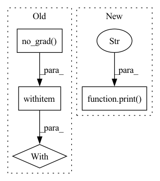

Pattern ID :5238
Before Change
num_samples += predictions.size(0)
// Set to 0 the gradient of pruned neurons
with torch.no_grad() :
for name, module in model.named_modules():
if isinstance(module, nn.Conv2d):
for n, p in module.named_parameters():
if n == "weight_orig":After Change
print(f"The current model has {(remaining_neurons / total_neurons) * 100} % of the original neurons")
if config.simplify:
print("Simplifying model" )
model = model.to("cpu")
propagate.propagate_bias(model, torch.zeros(1, 3, 224, 224), pinned_out)
remove_zeroed(model, torch.ones(1, 3, 224, 224), pinned_out)
model = model.to(device)In pattern: SUPERPATTERN
Frequency: 5
Non-data size: 4
Instances Fragment ID: 18581859
Project Name: eidoslab/simplify
Commit Name: e3cef5125238684e5bce46c85ed1ed762abd377e
Time: 2021-07-01
Author: carlo.alberto.barbano@outlook.com
File Name: training/train.py
M Class Name: AnonimousClass
N Class Name: AnonimousClass
M Method Name: main(1)
N Method Name: main(1)
M Parent Class:
N Parent Class:
M File Name: training/train.py
N File Name: training/train.py
M Start Line: 49
M End Line: 129
N Start Line: 49
N End Line: 147
Before Change
else:
self.update_J_Broyden(h, self.prev_Y[0], self.current_Y)
with torch.no_grad() :
self.update_hess()
self.update_grad(self.current_Y)
self.iteration += 1
After Change
print("full jac")
else:
self.update_J_Broyden(h, self.prev_Y[0], self.current_Y)
print("Broyden jac" )
self.update_hess()
self.update_grad(self.current_Y)
self.iteration += 1 Fragment ID: 18581858
Project Name: connorstoneastro/autoprof
Commit Name: edac78536835e4e35ffd761462ea1607fd4fdbcc
Time: 2022-12-07
Author: connorstone628@gmail.com
File Name: autoprof/fit/lm.py
M Class Name: LM
N Class Name: LM
M Method Name: step(2)
N Method Name: step(2)
M Parent Class: BaseOptimizer
N Parent Class: BaseOptimizer
M File Name: autoprof/fit/lm.py
N File Name: autoprof/fit/lm.py
M Start Line: 85
M End Line: 154
N Start Line: 87
N End Line: 160
Before Change
ts = time()
if (batchi + 1) % self.config["print_rate"] == 0:
print("Eval Batch {}: {:.2}s".format(batchi, np.mean(time_used[-self.config["print_rate"]:])))
with torch.no_grad() :
out = self.model(batch)
if batchi in self.vis_batches:
self.vis(batchi, batch, out)
loss, dict_loss = self.model.loss(out["src"], out["tgt"], out["match_weights"], out["keypoint_ints"], out["scores"], batch)After Change
out = self.model(batch)
except RuntimeError as e:
print(e)
print("WARNING: exception encountered... skipping this batch." )
continue
if batchi in self.vis_batches:
self.vis(batchi, batch, out)
loss, dict_loss = self.model.loss(out["src"], out["tgt"], out["match_weights"], out["keypoint_ints"], out["scores"], batch) Fragment ID: 18581857
Project Name: utiasasrl/hero_radar_odometry
Commit Name: 8d350142346975f4786cb80a06d94b6d92cdef5d
Time: 2021-02-11
Author: keenburn2004@gmail.com
File Name: utils/monitor.py
M Class Name: SteamMonitor
N Class Name: SteamMonitor
M Method Name: validation(1)
N Method Name: validation(1)
M Parent Class: MonitorBase
N Parent Class: MonitorBase
M File Name: utils/monitor.py
N File Name: utils/monitor.py
M Start Line: 177
M End Line: 233
N Start Line: 184
N End Line: 236
Before Change
def model_image(fig, ax, model, image = None, showcbar = True, **kwargs):
if image is None:
with torch.no_grad() :
model.sample(model.model_image)
image = model.model_image.data.detach().cpu().numpy()
imshow_kwargs = {After Change
if isinstance(M,models.Sky_Model):
try:
sky_level = (10**(M["sky"].value)*model.target.pixelscale**2).detach().cpu().item()
print("subtracting sky level: " , sky_level)
break
except Exception as e:
print(e)
im = ax.imshow( Fragment ID: 18581862
Project Name: connorstoneastro/autoprof
Commit Name: 53be3d025f16413cb88735d0e934f1282bd41a02
Time: 2022-12-12
Author: connorstone628@gmail.com
File Name: autoprof/plots/image.py
M Class Name: AnonimousClass
N Class Name: AnonimousClass
M Method Name: model_image(5)
N Method Name: model_image(5)
M Parent Class:
N Parent Class:
M File Name: autoprof/plots/image.py
N File Name: autoprof/plots/image.py
M Start Line: 47
M End Line: 68
N Start Line: 48
N End Line: 69
Before Change
// x_adv, perturb = pgd_attack.perturb(x_real, x_real, c_trg_list[0])
for c_trg in c_trg_list:
with torch.no_grad() :
gen_noattack, gen_noattack_feats = self.G(x_real, c_trg)
// Attack
x_adv, perturb = pgd_attack.perturb(x_real, black, c_trg)
// x_adv = x_real + perturbAfter Change
// 11 layers + output
// layer_num_orig = 11
print("Layer" , layer_num_orig)
for i, (x_real, c_org) in enumerate(data_loader):
// Black image
black = np.zeros((1,3,256,256))
black = torch.FloatTensor(black).to(self.device) Fragment ID: 18581860
Project Name: natanielruiz/disrupting-deepfakes
Commit Name: 572a2bff955b18f76e8ba2cbc181036fed2f7b18
Time: 2019-12-24
Author: nruiz@Nataniels-MacBook-Pro.local
File Name: stargan/solver.py
M Class Name: Solver
N Class Name: Solver
M Method Name: test_attack(1)
N Method Name: test_attack(1)
M Parent Class: object
N Parent Class: object
M File Name: stargan/solver.py
N File Name: stargan/solver.py
M Start Line: 576
M End Line: 655
N Start Line: 660
N End Line: 743